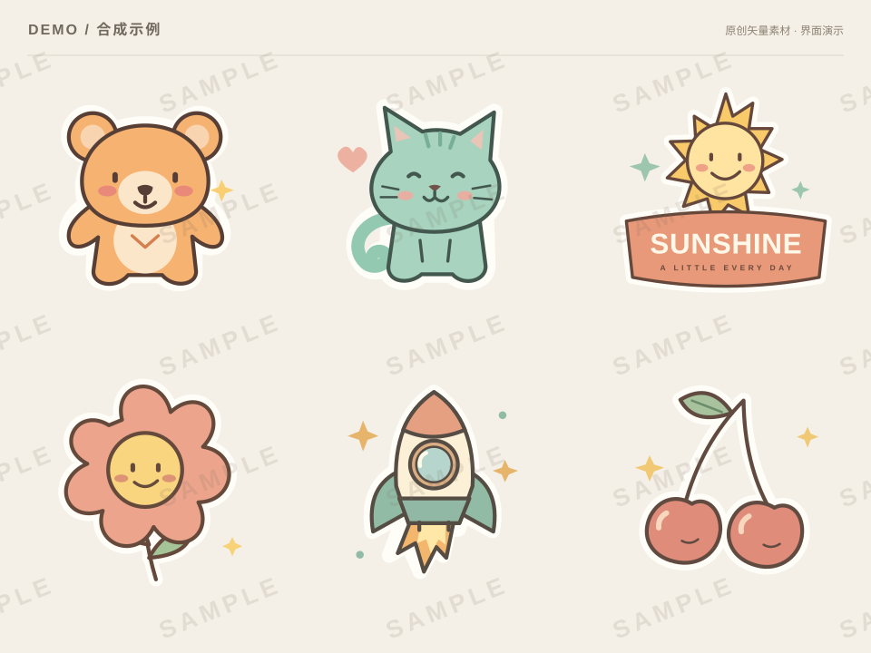

素材提取
把拼图里的完整设计，整理成独立的透明 PNG。
1 导入图片2 提取素材3 检查与下载
选择一张拼图
原件保留图片仅在你的浏览器中预览，不会发送到服务器。
演示将使用右侧示例，不会对上传的图片执行去水印或抠图。
内置示例原创合成素材

一张拼图，多个完整设计
6 个示例
人物、文字和装饰分别提取，同一设计保持完整。
合成示例 · 非真实处理
流程演示
识别完整设计
把属于同一设计的人物、文字和配件放在一起。
-
1
识别完整设计
找出人物、文字、徽章和图案。
-
2
分离背景与处理水印
保留设计内容，处理需要修复的区域。
-
3
生成独立素材
检查边缘、文字和设计是否完整。
点击下一步查看界面变化，没有后台 AI 任务。
已保存修正方案。本 Demo 不执行重新抠图，下载仍为内置示例。
示例素材已移除
可撤销移除，或重新开始演示。
图片编号
现有功能继续保留，可靠匹配直接通过，只处理疑难项。
导入本批文件
已有功能入口演示统一管理
员工使用同一个网站，管理员统一配置服务。
D
DeepSeek
沿用当前共享 Key 管理，负责图片识别和设计盘点。
共用设置入口示意素材图像服务
负责抠图和局部修复，具体服务待确认后接入。
尚未接入 · 演示占位这版 Demo 能做什么？
- 体验两个员工功能入口、上传预览、示例处理步骤和结果查看。
- 调整框选、涂抹修正方案，体验选择、移除、撤销和下载示例。
- 不保存密钥、不调用收费服务，不改变正式网站的设置。